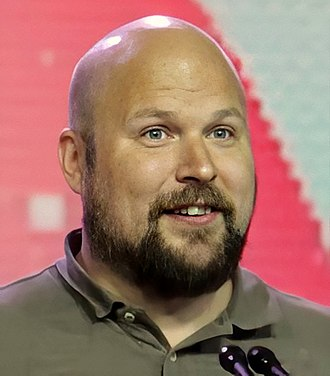

The Greatest Game Developer of all time...

Markus "Notch" Persson
Notch, as he is commonly called, was born 1 June 1979 in Stockholm, Sweden.
At the age of 7, Notch began programming on his father's Commodore 128. Since then,
he was an avid video game developer, making his first text-based game just a year
after, at the age of 8. Once he became an adult, he began working as a professional
developer at King until 2009. He then began working at Jalbum as a program. During that time,
he prepared a tech-demo for Minecraft: Order of the Stone (Renamed to Minecraft):
The game started out unheard of, but soon it's popularity grew from a small group to a
huge player base. The game's open world and variety of building blocks make it appealing
for almost anyone to play. Although there have been a lot of additions and changes over the
years, the core gameplay is still there: explore, mine, and build whatever you can dream of.
Obviously, this amazing game earns Notch a spot as one of the best game developers of all time
if not the best!
External Links: Notch,
Minecraft